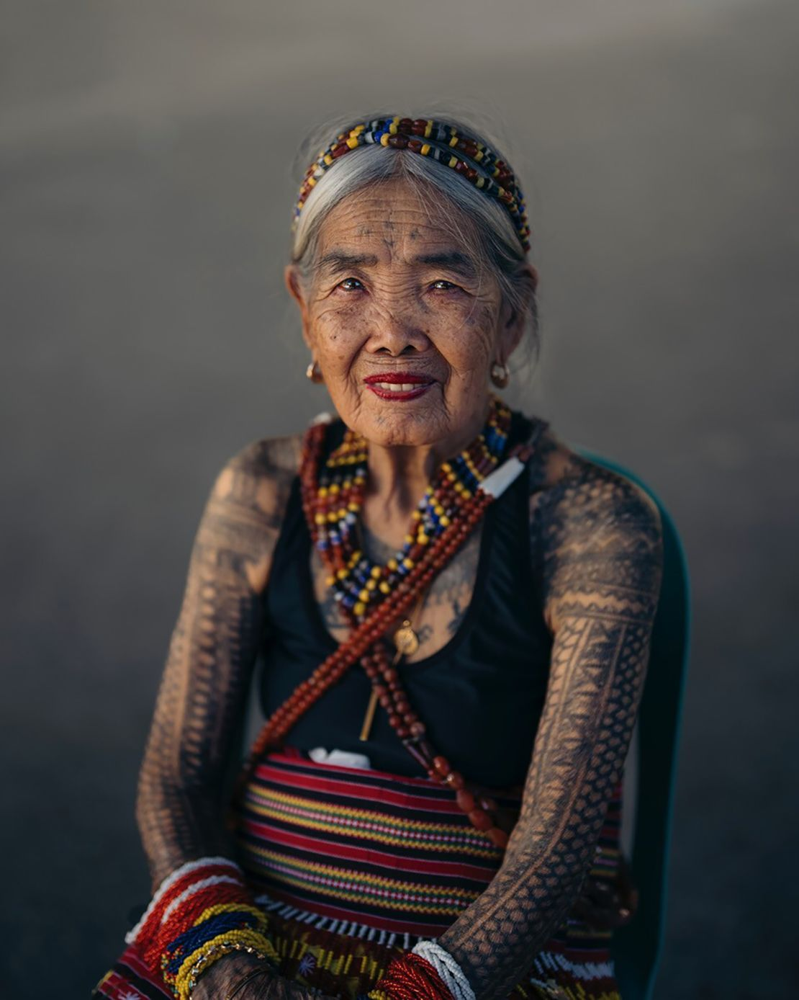

Whang-od Oggay [also known as Maria Oggay] is a tattoo artist from the village of Buscalan within Tinglayan, Kalinga, Philippines. She is considered a national treasure as the "last" and oldest mambabatok. Whang-od learned how to tattoo from her dad at the age of 16 and continues to tattoo today at the age of 109. She first started tattooing warriors, as tattoos were traditionally earned after combat. She now continues her practice by tattooing tourists who visit Buscalan. Thanks to Whang-od and her descendants, the thousand-year-old practice of batok will live on.